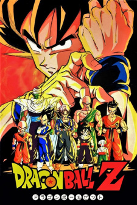
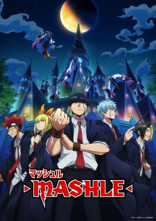

When high schooler Momo, from a family of spirit mediums, first meets her classmate Okarun, an occult geek, they argue—Momo believes in ghosts but denies aliens, and Okarun belie...
ROMANCE
RENT A GIRLFRIEND
3 Seasons
36 Episodes
Kazuya Kinoshita is a 20-year-old college student
who has a wonderful girlfriend: the bright and sunny Ma...
TORADORA
1 Season
24 Episodes
Ryuuji Takasu is a gentle high school student with a love for housework;
but in contrast to his kind nature...
HORIMAYA
2 Seasons
26 Episodes
On the surface, the thought of Kyouko Hori and Izumi Miyamura getting along would be the last thing in people's minds. After all, Hori has a perf...
FRUIT BASKET
3 Seasons
63 Episodes
Tooru Honda has always been fascinated by the story of the Chinese zodiac that her
beloved mother told her as a ...
WOTAKI: LOVE IS HARD FOR OTAKU
1 Season
15 Episodes
Having slept through all four of her alarms, the energetic Narumi Momose finds herself running late
for her firs...
YOUR LIE IN APRIL
1 Season
24 Episodes
Kousei Arima is a child prodigy known as the "Human Metronome" for playing the piano with precision
and perfect...
THE DANGERS IN MY HEART
2 Seasons
26 Episodes
Kyoutarou Ichikawa may look like a shy and reserved middle school student, but deep within his
heart is a blood...
YOUR NAME
1 Movie
Mitsuha Miyamizu, a high school girl, yearns to live the life of a boy in the bustling city
of Tokyo—a dream that stands in stark contrast to her present life in the coun...
MY HAPPY MARRIAGE
1 Season
12 Episodes
Misery seems everlasting in Miyo Saimori's life. Born from an arranged marriage, she was quickly
discarded afte...
MY LOVE STORY WITH YAMADA-KUN AT LV999
1 Season
13 Episodes
After her boyfriend breaks up with her for another girl, college student Akane ...
ACTION
ATTACK ON TITAN
4 Seasons
89 Episodes
Centuries ago, mankind was slaughtered to near extinction by monstrous humanoid creatures called
Titans, forcin...
BLACK CLOVER
1 Season
170 Episodes
Asta and Yuno were abandoned at the same church on the same day. Raised together as children,
they came to know...
BLEACH
1 Season
366 Episodes
Ichigo Kurosaki is an ordinary high schooler—until his family is attacked by a Hollow, a
corrupt spirit that se...
HUNTER X HUNTER
1 Season
148 Episodes
Hunters devote themselves to accomplishing hazardous tasks, all from traversing the world's uncharted territories to locating rare items and mons...
ONE PIECE
20 Seasons
1064 Episodes
In a world covered by ocean water, Luffy is on a quest to find the One Piece, the lost treasure of the former King of Pirates. He's not alone, of...
NARUTO SHIPPUDEN
1 Season
501 Episodes
It has been two and a half years since Naruto Uzumaki left Konohagakure, the Hidden Leaf Village, for intense training following events which fue...
FULLMETAL ALCHEMIST
1 Season
51 Episodes
Edward Elric, a young, brilliant alchemist, has lost much in his twelve-year life: when he and his brothe...
DRAGON BALL Z
9 Seasons
291 Episodes
Five years after winning the World Martial Arts tournament, Gokuu is now living a peaceful life with his wife and son. This changes, however, wit...

BERSERK
4 Seasons
25 Episodes
Guts, a man who will one day be known as the Black Swordsman, is a young traveling mercenary characterized by the large greatsword...
FIRE FORCE
2 Seasons
48 Episodes
Spontaneous Human Combustion: a chaotic phenomenon that has plagued humanity for years, randomly transforming ordinary people into...
COMEDY
MASHLE: MUSCLE AND MAGIC
2 Seasons
24 Episodes
In this magical world, one is easily identified as having magical abilities by a distinctive mark on their face....

THE DISASTROUS LIFE OF SAIKI K.
3 Seasons
103 Episodes
To the average person, psychic abilities might seem a blessing; for Kusuo Saiki, however, this could not be further from the truth....
KONOSUBA
3 Seasons
31 Episodes
After dying a laughable and pathetic death on his way back from buying a game, high school student and recluse Kazuma Sa...
GINTAMA
7 Seasons
201 Episodes
After a one-year hiatus, Shinpachi Shimura returns to Edo, only to stumble upon a shocking surprise: Gintoki and Kagura, his fellow Yorozuya...
GRAND-BLUE
1 Season
12 Episodes
Iori Kitahara moves to the coastal town of Izu for his freshman year at its university, taking residence above Grand Blue, his uncle's scuba...
GOLDEN BOY
1 Season
6 Episodes
Kintarou Ooe is a specialist in part-time work, riding all over the highways and byways of Japan on his trusty steed, the Mikazuki 5, and finding...
SPY X FAMILY
2 Seasons
37 Episodes
Corrupt politicians, frenzied nationalists, and other warmongering forces constantly jeopardize the thin veneer of peace between neighboring...
KAGUYA-SAMA: LOVE IS WAR
3 Seasons
36 Episodes
At the renowned Shuchiin Academy, Miyuki Shirogane and Kaguya Shinomiya are the student body's top representatives....
DAILY LIFE OF HIGH SCHOOL BOYS
1 Season
12 Episodes
Roaming the halls of the all-boys Sanada North High School are three close comrades: the eccentric ringleader with ...
ASSASSINATION CLASSROOM
2 Seasons
47 Episodes
Tucked in the mountains near the elite Kunugigaoka Middle School lies a small derelict building that houses the delinquents and dropouts...